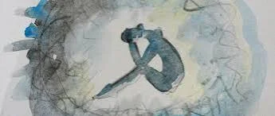
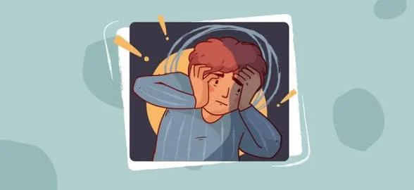
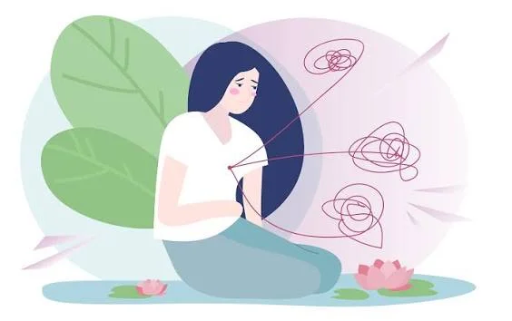

КПТСР
Комплексное ПТСР возникает после травмы, которая была длительной или повторялась, и из которой было трудно или невозможно уйти. Затрагивается не только память, но и то, как человек чувствует себя и строит отношения.

Откуда берётся
- Насилие, пренебрежение или эмоциональная жестокость в детстве, особенно со стороны близких.
- Длительное домашнее насилие, контроль и запугивание.
- Плен, пытки, торговля людьми, жизнь в зоне боевых действий.
Когда опасность исходит от тех, кто должен защищать, у ребёнка или взрослого нет возможности убежать. Психика приспосабливается к постоянной угрозе, и эти приспособления сохраняются и после её окончания.
Те же симптомы, что при ПТСР, и ещё три группы
В МКБ-11 к вторжению, избеганию и ощущению угрозы добавляются «расстройства самоорганизации».
Трудности с регуляцией эмоций
Реакции вспыхивают слишком сильно и долго не утихают или сменяются оцепенением. Часты диссоциация (чувство отстранённости от себя и мира) и самоповреждающее поведение.
Негативный образ себя
Глубокое убеждение, что ты плохой, сломанный, ничтожный. Стыд и вина, которые не соответствуют реальным поступкам.
Трудности в отношениях
Сложно доверять и сближаться. Возможны избегание близости, попадание в похожие тяжёлые ситуации снова и снова, сильный страх быть брошенным.
Эмоциональные флешбэки
Психотерапевт Пит Уокер описал их так: возвращаются не картинки, а чувства: страх, стыд, беспомощность, ощущение себя ребёнком. Человек может не понимать, откуда накрыло. Он же описал четыре типичные реакции на угрозу: бей, беги, замри и угождай (fight, flight, freeze, fawn). У каждого обычно преобладает одна-две.

«...the single most important aspect of mental health.»
Бессел ван дер Колк о безопасных отношениях с людьми, «Тело помнит всё» (The Body Keeps the Score), 2014
Диагноз и путаница
КПТСР есть в МКБ-11, но в американской классификации DSM-5 отдельного диагноза нет. Его нередко путают с пограничным расстройством личности, депрессией или тревожным расстройством, и они могут быть и вместе. Разобраться может психиатр или клинический психолог, знакомый с темой травмы.

С чем часто сочетается
Депрессия, тревога, панические атаки, проблемы со сном, хроническая боль и другие телесные симптомы, злоупотребление алкоголем и веществами. Это не отдельные «поломки», а часть общей картины, и лечить их стоит вместе.
История понятия
Идею комплексной травмы предложила психиатр Джудит Герман в 1992 году: у выживших после длительного насилия картина шире, чем описана в диагнозе ПТСР. Долгие годы КПТСР обсуждали, но не включали в классификации. В МКБ-11, которая вступила в силу в 2022 году, оно стало самостоятельным диагнозом.
Критерии МКБ-11
Для КПТСР нужны все три ядерные группы ПТСР (переживание заново, избегание, ощущение угрозы) и три группы расстройств самоорганизации: нарушение регуляции эмоций, негативный образ себя и трудности в отношениях. Источник травмы обычно длительный или повторяющийся, а симптомы мешают учёбе, работе и близости.
Детство и привязанность
Больше всего вреда наносит травма в раннем возрасте, когда формируются привязанность и представление о себе. Исследование ACE (1998) показало, что неблагоприятный детский опыт — насилие, пренебрежение, неблагополучная семья — связан с повышенным риском депрессии, зависимостей и ряда хронических болезней во взрослом возрасте. Это риск, а не приговор: поддержка и терапия его снижают.
Диссоциация
Диссоциация — способ психики «отключиться» от невыносимого. Бывает деперсонализация (кажется, что тело или мысли чужие), дереализация (мир выглядит нереальным или «за стеклом»), провалы в памяти. Когда она происходит часто и мешает жить, нужна помощь специалиста.
Как часто встречается
Точных цифр мало, они зависят от выборки и метода. По ряду исследований, критериям КПТСР по МКБ-11 в общей популяции соответствует примерно 1–3% людей, а среди переживших длительное насилие доля заметно выше.
Восстановление при КПТСР
Оно занимает больше времени, чем при ПТСР, и идёт по этапам: сначала безопасность и навыки эмоциональной регуляции, затем работа с воспоминаниями, затем возвращение к отношениям и жизни. Улучшения реальны, но идут волнами, и откаты не означают провала.
Сайт не заменяет помощь специалиста. Если вы в опасности, позвоните в экстренную службу (112).